Product Backlog Building
É uma sigla para Product Backlog Building (PBB). É uma técnica para criar e manter uma lista de itens de trabalho para um projeto de software. O PBB tem como objetivo principal construir um backlog de forma colaborativa, de modo que todos os envolvidos no projeto compreendam o contexto do negócio. É um processo contínuo que começa antes do início do projeto e continua durante todo o ciclo de vida do projeto.
1. Visão do Produto
Esta seção consolida os problemas identificados e as expectativas para o sistema HealthNet, definindo o propósito e o valor do produto. Link para o board no Miro
1.1. Problemas Atuais
A empresa enfrenta desafios significativos que impactam a eficiência operacional e a qualidade do atendimento ao paciente. Os principais problemas identificados são:
- Sistemas Fragmentados: Utilização de múltiplos sistemas incompatíveis entre as unidades, resultando em ilhas de informação.
- Gestão de Prontuários Ineficiente: Dificuldade em acessar um histórico unificado e completo dos pacientes, levando a diagnósticos e tratamentos fragmentados.
- Processos Manuais Excessivos: Dependência de processos manuais para agendamento, registro e gestão de medicamentos, aumentando o risco de erros.
- Agendamento Ineficaz: Falta de uma visão centralizada das agendas dos profissionais, causando conflitos, sobreposições e ociosidade.
- Controle de Medicamentos Deficiente: Risco elevado de erros na dispensação de medicamentos por falta de verificação de interações e alergias.
- Baixa Conformidade Regulatória: Dificuldade em gerar relatórios e garantir a conformidade com as normas de saúde expondo a organização a riscos legais.
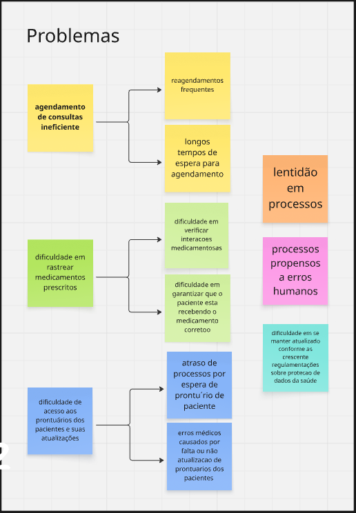
1.2. Expectativas para a Solução
O sistema HealthNet visa transformar o cenário atual, entregando os seguintes resultados:
- Integração Total: Um ecossistema de saúde unificado, onde dados de pacientes, prontuários e agendamentos são compartilhados em tempo real entre todas as unidades.
- Usabilidade Superior: Interfaces intuitivas e amigáveis para todas as personas, reduzindo a curva de aprendizado e otimizando o tempo de execução das tarefas.
- Automação de Processos: Automatização de tarefas repetitivas como agendamentos, notificações, verificações de conformidade e geração de relatórios.
- Segurança do Paciente Aprimorada: Redução drástica de erros médicos através de alertas inteligentes, checagem de interações medicamentosas e acesso rápido a históricos completos.
- Conformidade Assegurada: Ferramentas que garantem a adesão às regulamentações de saúde, com trilhas de auditoria e relatórios automáticos.
- Melhor Experiência do Usuário: Uma jornada mais fluida e satisfatória tanto para a equipe de saúde quanto para os pacientes.
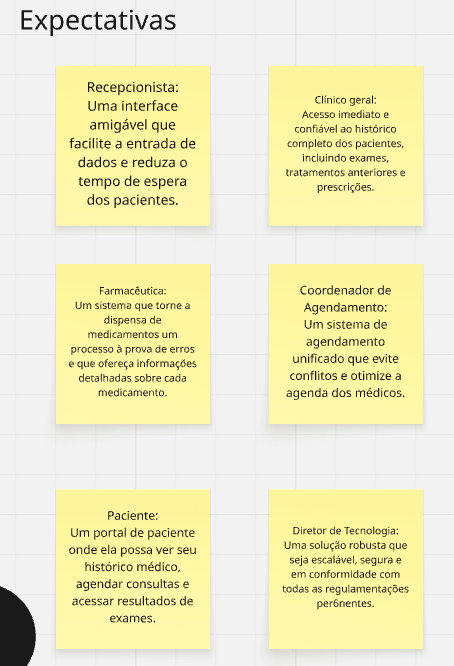
2. Personas
As personas a seguir representam os principais usuários do sistema e suas necessidades.
| Persona | Papel Principal (O que faz) | Expectativa com o Sistema (O que espera) |
|---|---|---|
| Maria | Recepcionista responsável pelo primeiro contato, registro e atualização de dados dos pacientes. | Interface simples e rápida para inserção de dados e agendamento. |
| Dr. João | Médico Clínico Geral focado no atendimento clínico, diagnóstico e prescrição. | Acesso imediato ao histórico completo do paciente e suporte à decisão clínica (alertas). |
| Lívia | Farmacêutica que gerencia a dispensação de medicamentos. | Sistema que valide prescrições e verifique alergias e interações medicamentosas automaticamente. |
| Rafael | Coordenador de Agendamento que otimiza as agendas dos profissionais de saúde. | Ferramenta unificada para gerenciar agendas, evitar conflitos e maximizar a ocupação. |
| Sra. Clara | Paciente que utiliza os serviços da clínica de forma regular. | Autonomia para agendar consultas online e acessar seu histórico de saúde e exames. |
| Sr. Roberto | Diretor de Tecnologia que supervisiona a infraestrutura de TI. | Solução segura, escalável, de fácil manutenção e em conformidade com as regulamentações. |
Imagens das Personas
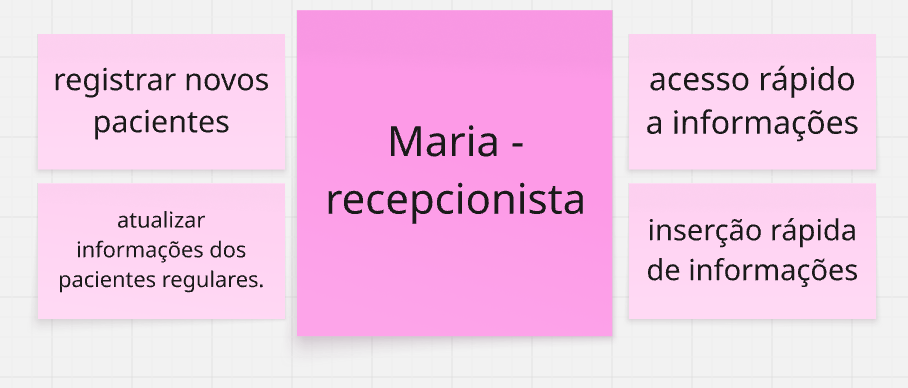
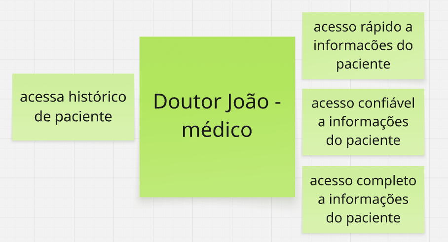
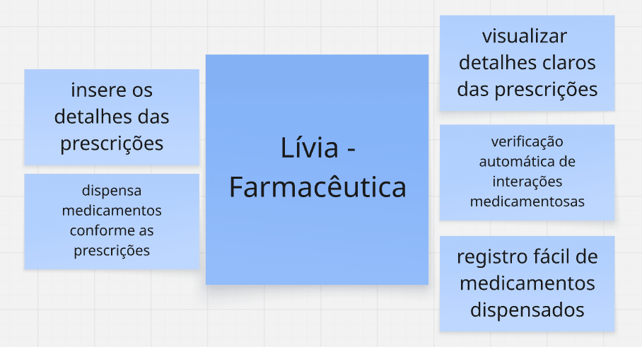
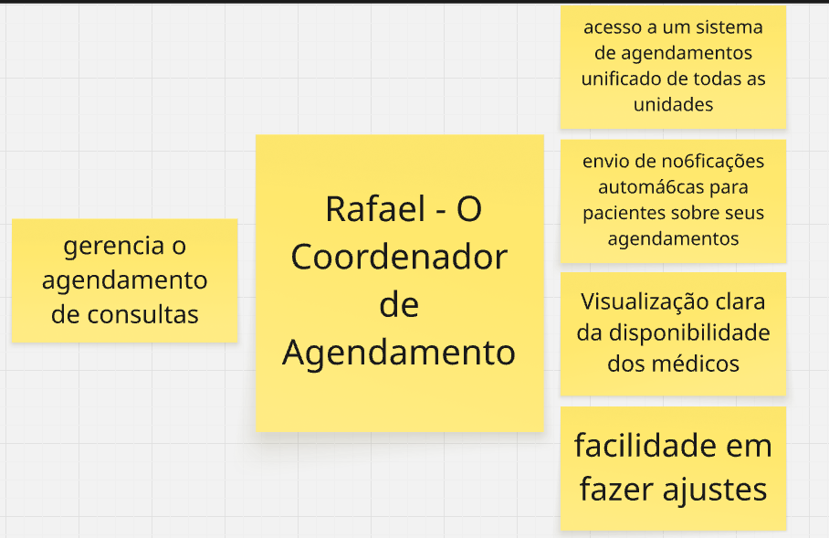
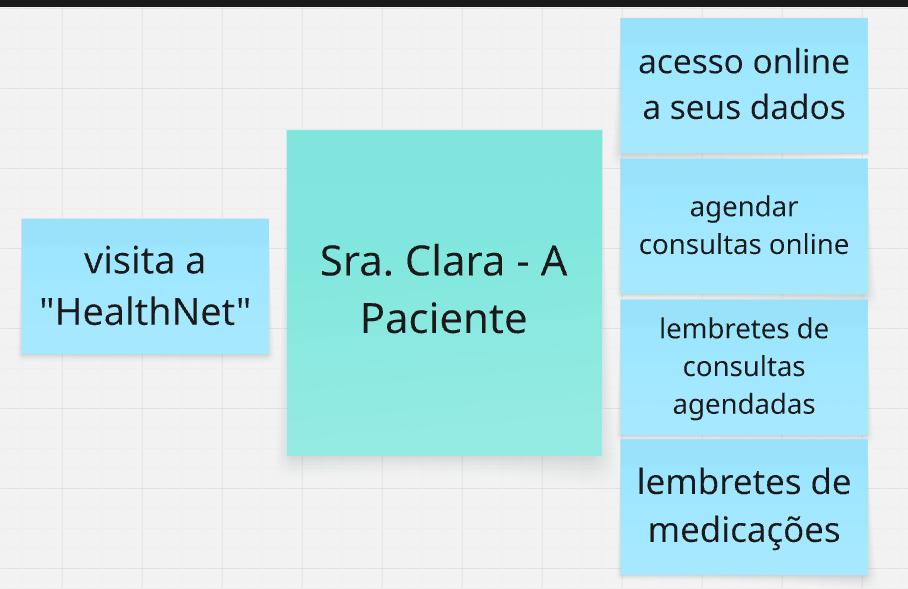
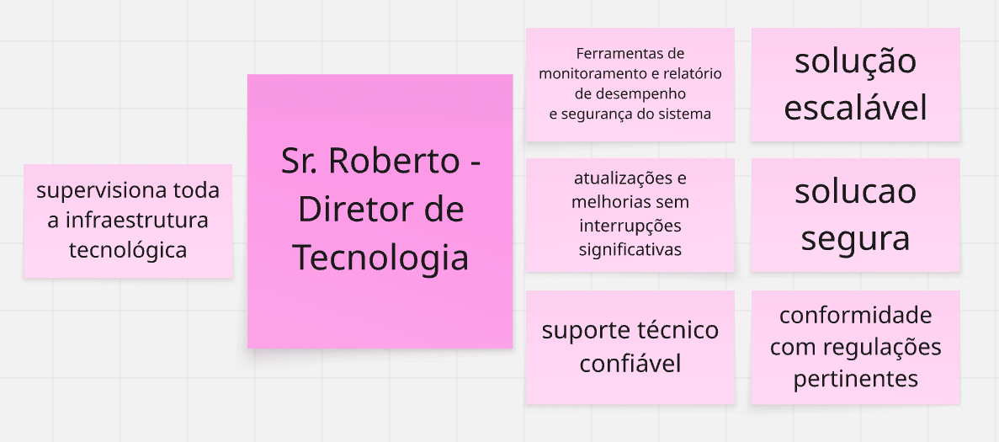
3. Mapa de Funcionalidades (Features)
As funcionalidades abaixo representam as grandes capacidades do sistema, que agrupam as histórias de usuário.
- Cadastro Centralizado de Pacientes
- Prontuário Digital Integrado (PDI)
- Agendamento Inteligente
- Gestão Integrada de Medicamentos
- Portal do Paciente
- Sistema de Compliance e Relatórios
- Painel de Gestão Tecnológica
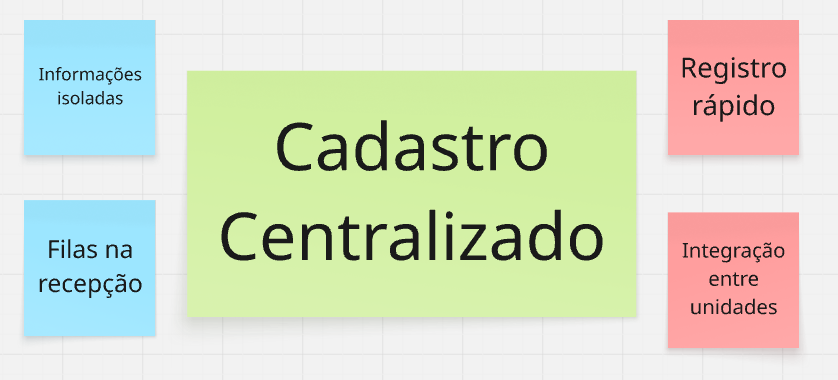
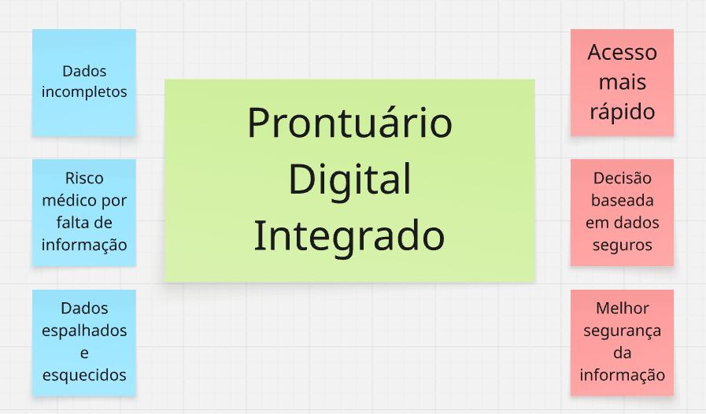
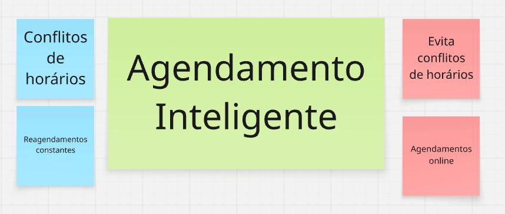
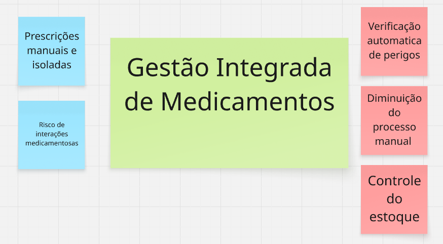
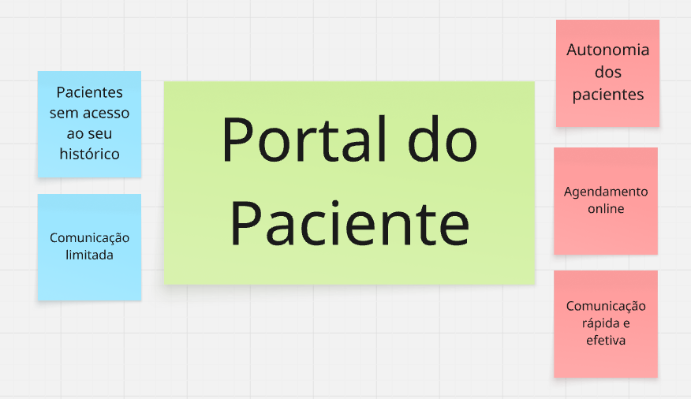
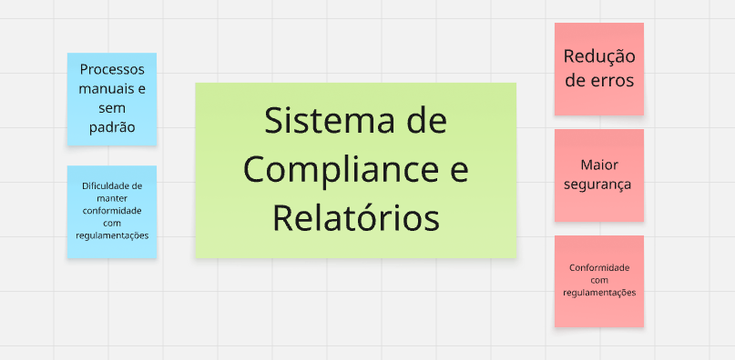
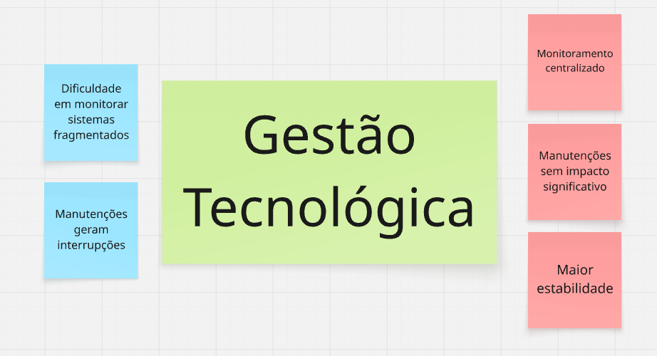
4. Product Backlog
A seguir, o detalhamento do Product Backlog em formato de tabelas por funcionalidade.
Funcionalidade 1: Cadastro Centralizado de Pacientes
| ID | História de Usuário | Critérios de Aceitação | Cenário BDD (Gherkin) |
|---|---|---|---|
| HU-01 | Como Recepcionista, eu quero registrar um novo paciente com dados completos, para que suas informações estejam centralizadas e acessíveis para futuros atendimentos. | 1. O formulário deve conter os campos obrigatórios: nome completo, CPF, data de nascimento e contato. 2. O sistema deve validar o formato do CPF e impedir registros duplicados. 3. Após o registro, o paciente deve receber um número de identificação único no sistema. 4. Os dados devem estar imediatamente disponíveis para todas as unidades da franquia. |
- |
| HU-02 | Como Médico, eu quero consultar os dados cadastrais integrados de um paciente, para que eu tenha uma visão completa e possa confirmar sua identidade antes do atendimento. | 1. A busca por paciente pode ser feita por nome completo, CPF ou número de identificação. 2. O resultado da busca deve exibir os dados pessoais e o histórico de unidades visitadas. |
|
| HU-03 | Como Diretor de TI, eu quero que os dados dos pacientes sejam atualizados automaticamente entre as unidades, para que se garanta a consistência da informação e se evite retrabalho. | 1. Qualquer alteração no cadastro de um paciente feita em uma unidade deve ser replicada para todas as outras. 2. O sistema deve manter um log de todas as alterações, indicando quem fez, o que foi alterado e quando. |
- |
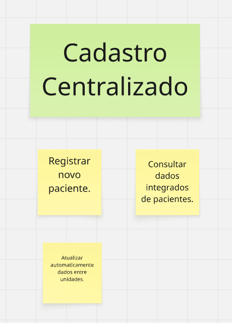
Funcionalidade 2: Prontuário Digital Integrado (PDI)
| ID | História de Usuário | Critérios de Aceitação | Cenário BDD (Gherkin) |
|---|---|---|---|
| HU-04 | Como Médico, eu quero acessar o histórico completo de consultas, exames e diagnósticos de um paciente em uma única tela, para que eu possa tomar decisões clínicas mais seguras e informadas. | 1. A visualização deve ser cronológica, do atendimento mais recente ao mais antigo. 2. Deve ser possível filtrar o histórico por tipo de evento (consulta, exame, prescrição). 3. Dados de todas as unidades da franquia devem ser consolidados na mesma visão. |
- |
| HU-05 | Como Médico, eu quero inserir novas informações no prontuário, como diagnósticos e pedidos de exames, para que o registro do paciente se mantenha atualizado. | 1. O sistema deve usar CID-10 para o registro de diagnósticos. 2. Os pedidos de exame devem ser associados ao atendimento atual. 3. A inserção deve ser assinada digitalmente (login do médico) e não pode ser alterada após salva, apenas adicionado um registro de retificação. |
Cenário: Registro de diagnóstico com CID-10 Dado que o médico "João de Almeida" está autenticado no sistema E acessa o prontuário da paciente "Clara Mendes Falcão" Quando ele insere o diagnóstico "Hipertensão" com o código CID-10 "I10"E clica em "Salvar Consulta" Então o diagnóstico deve constar no histórico da paciente com data "14/07/2025" e médico "João de Almeida" E o sistema deve registrar a assinatura digital do médico |
| HU-06 | Como Médico, eu quero receber alertas automáticos sobre informações críticas ou faltantes no prontuário (ex: alergias não registradas), para que a segurança do paciente seja aumentada. | 1. Ao abrir um prontuário pela primeira vez, o sistema deve exibir um alerta proeminente se o campo "Alergias" estiver vazio. 2. O alerta deve permanecer visível até que o médico confirme a ciência ou preencha a informação. |
- |
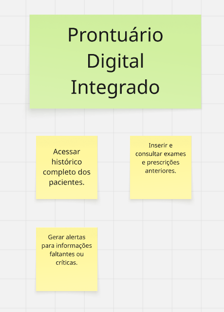
Funcionalidade 3: Agendamento Inteligente
| ID | História de Usuário | Critérios de Aceitação | Cenário BDD (Gherkin) |
|---|---|---|---|
| HU-07 | Como Paciente, eu quero agendar consultas online através do portal, para que eu tenha conveniência e não precise ligar para a clínica. | 1. O portal deve exibir os horários disponíveis por médico e especialidade. 2. Após a seleção, o sistema deve pedir uma confirmação antes de efetivar o agendamento. 3. Um e-mail/SMS de confirmação deve ser enviado imediatamente para a paciente. |
Cenário: Agendamento com sucesso Dado que a paciente "Clara Mendes Falcão" está logada no Portal E seleciona a especialidade "Ginecologia" e o médico "João de Almeida" E escolhe o horário "10h00" do dia "08/07/2025", que está disponível Quando ela clica em "Confirmar Agendamento" Então o sistema deve exibir a mensagem "Consulta agendada!" E o horário "08/07/2025 - 10h00" deve ficar indisponível na agenda do médico "João de Almeida" E um e-mail/SMS de confirmação deve ser enviado para "clara.mfalcao@email.com" |
| HU-08 | Como Coordenador, eu quero que os pacientes sejam notificados automaticamente sobre suas consultas, para que se reduza a taxa de não comparecimento (no-show). | 1. A notificação de confirmação é enviada no momento do agendamento. 2. A notificação de lembrete é enviada 24 horas antes da consulta. 3. O paciente deve ter a opção de confirmar ou cancelar a consulta através do lembrete. |
- |
| HU-09 | Como Coordenador, eu quero visualizar a disponibilidade integrada de todos os médicos em uma única tela, para que eu possa otimizar a alocação de horários. | 1. A visualização deve ser em formato de calendário (diário, semanal, mensal). 2. Deve ser possível filtrar por unidade e por especialidade. 3. Horários ocupados, livres e bloqueados devem ter cores distintas. |
- |
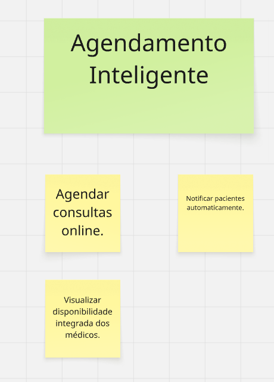
Funcionalidade 4: Gestão Integrada de Medicamentos
| ID | História de Usuário | Critérios de Aceitação | Cenário BDD (Gherkin) |
|---|---|---|---|
| HU-10 | Como Farmacêutica, eu quero que o sistema verifique interações medicamentosas automaticamente, para que se evite reações adversas. | 1. O sistema deve cruzar a nova prescrição com o histórico de medicamentos do paciente. 2. Se uma interação de risco for detectada, um alerta bloqueante deve ser exibido. 3. O alerta deve detalhar os medicamentos e o risco associado. |
Cenário: Alerta de interação de alto risco Dado que a paciente "Clara Mendes Falcão" faz uso do medicamento "Dipirona" registrado em seu histórico E o médico "João de Almeida" prescreve o medicamento "Aspirina" em uma nova consulta Quando a farmacêutica "Lívia Nunes" valida a nova prescrição no sistema Então o sistema deve exibir a mensagem "ALERTA DE INTERAÇÃO GRAVE entre Dipirona e Aspirina" E a dispensação da prescrição deve ser bloqueada automaticamente pelo sistema |
| HU-11 | Como Farmacêutica, eu quero registrar a dispensação de cada medicamento prescrito, para que haja um controle de estoque e um histórico preciso. | 1. A dispensação só pode ser registrada para uma prescrição válida. 2. O sistema deve registrar data, hora, quantidade e o farmacêutico responsável. |
- |
| HU-12 | Como Médico, eu quero que o sistema me alerte sobre alergias conhecidas do paciente ao prescrever, para que se evitem reações alérgicas graves. | 1. Ao digitar um medicamento ao qual o paciente é alérgico, um alerta deve aparecer. 2. O sistema deve impedir a conclusão da prescrição desse medicamento. |
Cenário: Tentativa de prescrever medicação alergênica Dado que a paciente "Clara Mendes Falcão" possui alergia registrada ao medicamento "Penicilina" Quando o médico "João de Almeida" tenta prescrever "Amoxicilina" em uma nova consulta Então o sistema deve exibir a mensagem "ALERTA DE ALERGIA: paciente alérgica à Penicilina" E o sistema deve impedir a finalização da prescrição com este medicamento |
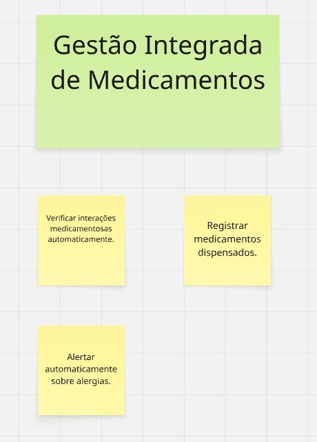
Funcionalidade 5: Portal do Paciente
| ID | História de Usuário | Critérios de Aceitação | Cenário BDD (Gherkin) |
|---|---|---|---|
| HU-13 | Como a Paciente, eu quero consultar meus resultados de exames e histórico pelo portal, para que eu possa acompanhar minha saúde. | 1. O portal deve listar todos os exames com seus respectivos laudos. 2. O acesso deve ser protegido por autenticação de dois fatores. |
Cenário: Paciente consulta resultado Dado que a paciente "Clara Mendes Falcão" está logada no Portal com autenticação em dois fatores E navega até a seção "Meus Exames" Quando ela clica no exame "Hemograma Completo" realizado em "01/07/2025" Então o sistema deve exibir o laudo correspondente com data, valores de referência e assinatura do laboratório |
| HU-14 | Como a Paciente, eu quero receber notificações e lembretes importantes sobre minha saúde pelo portal, para que eu não perca compromissos. | 1. O portal deve ter uma área de "Notificações". 2. Notificações devem ser geradas para: confirmação de consulta, lembrete, resultado de exame disponível. |
- |
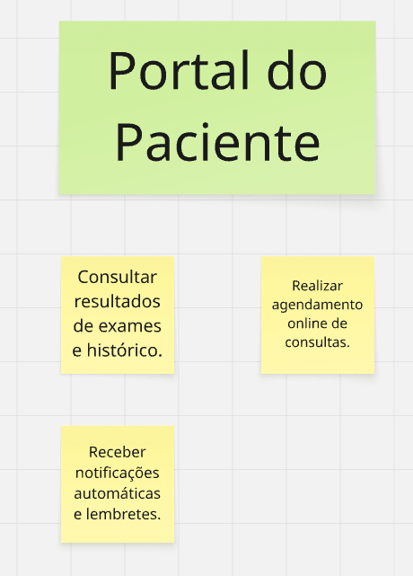
Funcionalidade 6: Sistema de Compliance e Relatórios
| ID | História de Usuário | Critérios de Aceitação | Cenário BDD (Gherkin) |
|---|---|---|---|
| HU-15 | Como Diretor de TI, eu quero que o sistema colete e consolide dados para conformidade regulatória automaticamente, para que se reduza o esforço manual em auditorias. | 1. O sistema deve registrar todos os acessos aos prontuários (quem, quando, o quê). 2. Os logs devem ser armazenados de forma segura e inviolável. |
- |
| HU-16 | Como Diretor de TI, eu quero gerar relatórios de conformidade e operacionais, para que a gestão tenha dados para a tomada de decisão. | 1. O sistema deve oferecer uma biblioteca de relatórios pré-definidos. 2. Deve ser possível exportar os relatórios nos formatos PDF e CSV. |
- |
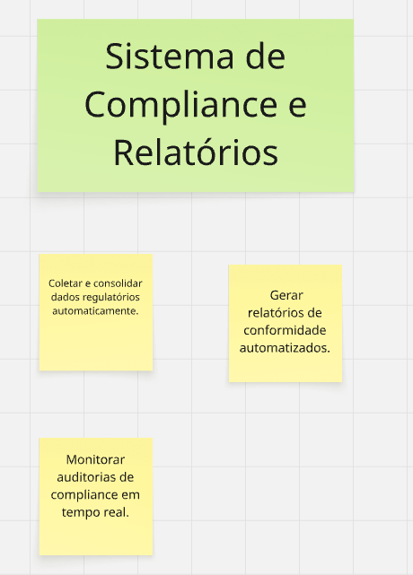
Funcionalidade 7: Painel de Gestão Tecnológica
| ID | História de Usuário | Critérios de Aceitação | Cenário BDD (Gherkin) |
|---|---|---|---|
| HU-17 | Como Diretor de TI, eu quero monitorar a segurança e o desempenho do sistema através de um painel, para que eu possa garantir a disponibilidade e a integridade da solução. | - | - |
| HU-18 | Como Diretor de TI, eu quero gerenciar o suporte técnico de forma integrada, para que os chamados dos usuários sejam resolvidos eficientemente. | - | - |
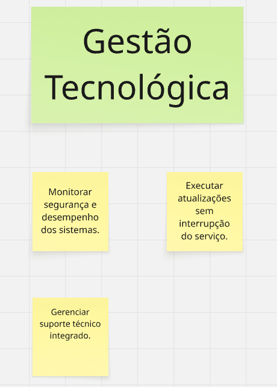
Histórico de Versão:
| Data | Versão | Descrição | Autor | Revisores |
|---|---|---|---|---|
| 23/06/2025 | 1.0 | Criação do Documento | Eduardo Waski, Luis Eduardo Lima, Isabelly | Henrique, Filipe, Cibelly |
| 14/07/2025 | 1.1 | Alterações para adequação à Issue #30 | Eduardo Waski | Filipe |